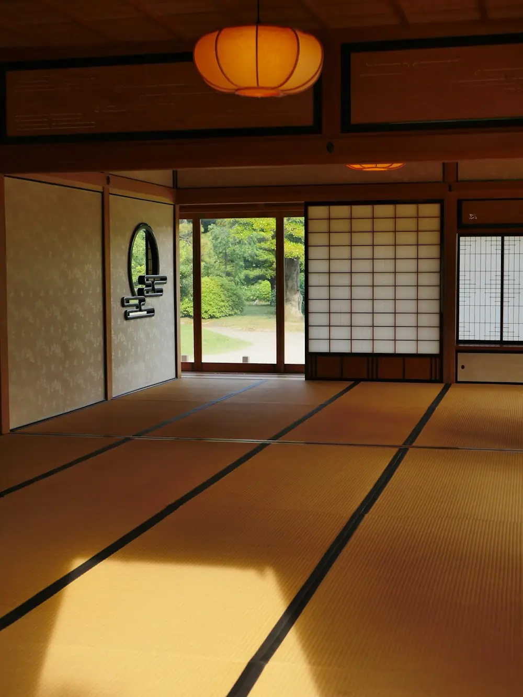

ROOMS & RATES
客室と料金
家一棟をまるごとお貸しします。料金は一泊あたり、ご利用の人数で決まります。お食事はつきません（朝食のみ追加できます）。

RATES
人数別の料金
| ご利用人数 | 平日 | 休前日・連休 |
|---|---|---|
| 一〜二名 | 38,000円 | 46,000円 |
| 三〜四名 | 52,000円 | 62,000円 |
| 五〜六名 | 64,000円 | 76,000円 |
小学生以下のお子さまは人数に含めません（添い寝・布団あり）。二泊目以降は一泊ごとに10%引きになります。年末年始は別料金です。
| 朝食 | 土鍋ご飯、味噌汁、地の野菜と湖魚の小鉢。八時に台所へお届けします。 | お一人 2,200円 |
|---|---|---|
| 薪と炭の追加 | 囲炉裏の炭は一晩分を含みます。 | 一束 800円 |
INCLUDED
料金に含まれるもの
- 一棟の貸切（土間・囲炉裏の間・奥座敷・寝室）
- 檜の湯（二十四時間）
- 人数分の布団・浴衣・タオル
- 台所道具・器・調味料の基本
- 囲炉裏の炭（一晩分）
- 敷地内の駐車場（三台まで）
- 無線LAN
- 長靴・傘・羽織りものの貸出
CHECK-IN
チェックインのご案内
チェックインは15:00〜18:00、チェックアウトは翌朝10:00です。到着時刻が変わるときは、お電話でお知らせください。
- 前日までに到着予定の時刻と、車でお越しかどうかをお知らせください。当日の天気や道の様子もお伝えします。
- 到着・お出迎え門の前で宿主がお待ちしています。お車は敷地奥の砂利の駐車場へ。
- 家のご案内（約15分）囲炉裏の火の扱い、お風呂、台所、鍵の使い方をご説明します。そのあとは、宿主は離れた自宅へ戻ります。
- ご滞在中困ったことがあれば、居間に置いた電話から宿主へ。夜22時以降は急ぎのご用件のみとさせてください。
- チェックアウト使った器は流しへ、布団はたたまずそのままで結構です。鍵を玄関の箱に戻してお帰りください。
HOUSE RULES
ハウスルール
古い家と、まわりの静けさを守るためのお願いです。
- 家の中は禁煙です喫煙は庭の灰皿の場所でお願いします。囲炉裏以外での火の使用はご遠慮ください。
- 夜21時からは静かに近くに農家のお宅があります。屋外での大きな声や音楽はお控えください。
- 花火・バーベキューは不可茅葺きの納屋が近いため、敷地内での火遊びはお断りしています。
- ペットはご相談ください小型犬一頭まで、事前のご連絡で受け付けます（清掃費 3,300円）。
- ご予約の人数で当日の人数変更や、ご予約以外の方の宿泊・訪問はご遠慮ください。
- ごみは分けて台所の箱に、燃えるもの・びん缶・プラの三つに分けてお入れください。
Q&A
よくあるご質問
キャンセル料はかかりますか？
7日前から30%、3日前から50%、前日・当日は100%を頂きます。台風や大雪などで道が通れないときは、いただきません。
近くに食事のできるお店はありますか？
車で十分ほどの町なかに、食堂とそば屋があります（夜は20時ごろまで）。食材を持ち込んで、台所で料理される方が多いです。
冬でも寒くありませんか？
寝室と居間には暖房があり、断熱も入れています。ただ土間と廊下は冷えるので、厚手の靴下をお持ちください。
小さな子ども連れでも泊まれますか？
はい。囲炉裏に柵をつけることもできますので、ご予約時にお申しつけください。